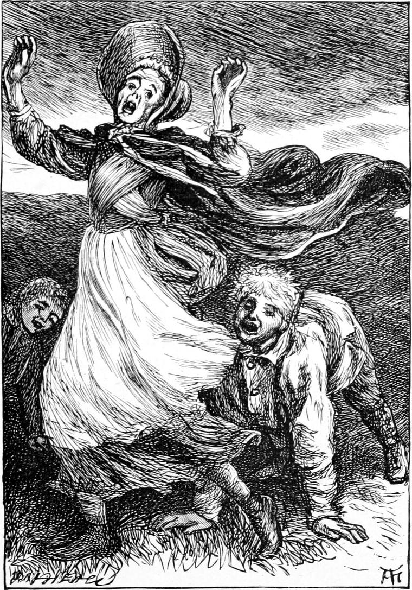

I began a series of persecutions of the Kelpie on my own account. I was doubtful whether Turkey would approve of them, so I did not tell him for some time; but I was ambitious of showing him that I could do something without him. I doubt whether it is worth while to relate the silly tricks I played her—my father made me sorry enough for them afterwards. My only excuse for them is, that I hoped by them to drive the Kelpie away.
There was a closet in the hall, the floor of which was directly over the Kelpie’s bed, with no ceiling between. With a gimlet I bored a hole in the floor, through which I passed a piece of string. I had already got a bit of black cloth, and sewed and stuffed it into something of the shape of a rat. Watching an opportunity, I tied this to the end of the string by the head, and hid it under her bolster. When she was going to bed, I went into the closet, and, laying my mouth to the floor, began squeaking like a rat, and scratching with my nails. Knowing by the exclamation she made that I had attracted her attention, I tugged at the string; this lifted the bolster a little, and of course out came my rat. I heard her scream, and open her door. I pulled the rat up tight to the ceiling. Then the door of the nursery, where we slept only in the winter, opened and shut, and I concluded she had gone to bed there to avoid the rat. I could hardly sleep for pleasure at my success.
As she waited on us at breakfast next morning, she told my father that she had seen in her bed the biggest rat she ever saw in her life, and had not had a wink of sleep in consequence.
“Well,” said my father, “that comes of not liking cats. You should get a pussy to take care of you.”
She grumbled something and retired.
She removed her quarters to the nursery. But there it was yet easier for me to plague her. Having observed in which bed she lay, I passed the string with the rat at the end of it over the middle of a bar that ran across just above her head, then took the string along the top of the other bed, and through a little hole in the door. As soon as I judged her safe in bed, I dropped the rat with a plump. It must have fallen on or very near her face. I heard her give a loud cry, but before she could reach the door, I had fastened the string to a nail and got out of the way.
It was not so easy in those days to get a light, for the earliest form of lucifer match was only just making its appearance in that part of the country, and was very dear: she had to go to the kitchen, where the fire never went out summer or winter. Afraid lest on her return she should search the bed, find my harmless animal suspended by the neck, and descend upon me with all the wrath generated of needless terror, I crept into the room, got down my rat, pulled away the string, and escaped. The next morning she said nothing about the rat, but went to a neighbour’s and brought home a fine cat. I laughed in my sleeve, thinking how little her cat could protect her from my rat.
Once more, however, she changed her quarters, and went into a sort of inferior spare room in the upper part of the house, which suited my operations still better, for from my own bed I could now manage to drop and pull up the rat, drawing it away beyond the danger of discovery. The next night she took the cat into the room with her, and for that one I judged it prudent to leave her alone, but the next, having secured Kirsty’s cat, I turned him into the room after she was in bed: the result was a frightful explosion of feline wrath.
I now thought I might boast of my successes to Turkey, but he was not pleased.
“She is sure to find you out, Ranald,” he said, “and then whatever else we do will be a failure. Leave her alone till we have her quite.”
I do not care to linger over this part of my story. I am a little ashamed of it.
We found at length that her private reservoir was quite full of meal. I kept close watch still, and finding one night that she was not in the house, discovered also that the meal-tub was now empty. I ran to Turkey, and together we hurried to Betty’s cottage.
It was a cloudy night with glimpses of moonlight. When we reached the place, we heard voices talking, and were satisfied that both the Kelpie and Wandering Willie were there.
“We must wait till she comes out,” said Turkey. “We must be able to say we saw her.”
There was a great stone standing out of the ground not far from the door, just opposite the elder-tree, and the path lay between them.
“You get behind that tree—no, you are the smaller object—you get behind that stone, and I’ll get behind the tree,” said Turkey; “and when the Kelpie comes out, you make a noise like a beast, and rush at her on all-fours.”
“I’m good at a pig, Turkey,” I said. “Will a pig do?”
“Yes, well enough.”
“But what if she should know me, and catch me, Turkey?”
“She will start away from you to my side; I shall rush out like a mad dog, and then she’ll run for it.”
We waited a long time—a very long time, it seemed to me. It was well it was summer. We talked a little across, and that helped to beguile the weary time; but at last I said in a whisper:
“Let’s go home, Turkey, and lock the doors, and keep her out.”
“You go home then, Ranald, and I’ll wait. I don’t mind if it be till to-morrow morning. It is not enough to be sure ourselves; we must be able to make other people sure.”
“I’ll wait as long as you do, Turkey; only I’m very sleepy, and she might come out when I was asleep.”
“Oh, I shall keep you awake!” replied Turkey; and we settled down again for a while.
At the long last the latch of the door was lifted. I was just falling asleep, but the sound brought me wide awake at once. I peeped from behind my shelter. It was the Kelpie, with an empty bag—a pillow-case, I believe—in her hand. Behind her came Wandering Willie, but did not follow her from the door. The moment was favourable, for the moon was under a thick cloud. Just as she reached the stone, I rushed out on hands and knees, grunting and squeaking like a very wild pig indeed. As Turkey had foretold, she darted aside, and I retreated behind my stone. The same instant Turkey rushed at her with such canine fury, that the imitation startled even me, who had expected it. You would have thought the animal was ready to tear a whole army to pieces, with such a complication of fierce growls and barks and squeals did he dart on the unfortunate culprit. She took to her heels at once, not daring to make for the cottage, because the enemy was behind her. But I had hardly ensconced myself behind the stone, repressing my laughter with all my might, when I was seized from behind by Wandering Willie, who had no fear either of pig or dog. He began pommelling me.

“Turkey! Turkey!” I cried.
The cry stopped his barking pursuit of the Kelpie. He rose to his feet and rushed to my aid. But when he saw the state of affairs, he turned at once for the cottage, crying:
“Now for a kick at the bagpipes!”
Wandering Willie was not too much a fool to remember and understand. He left me instantly, and made for the cottage. Turkey drew back and let him enter, then closed the door, and held it.
“Get away a bit, Ranald. I can run faster than Willie. You’ll be out of sight in a few yards.”
But instead of coming after us, Wandering Willie began playing a most triumphant tune upon his darling bagpipes. How the poor old woman enjoyed it, I do not know. Perhaps she liked it. For us, we set off to outstrip the Kelpie. It did not matter to Turkey, but she might lock me out again. I was almost in bed before I heard her come in. She went straight to her own room.